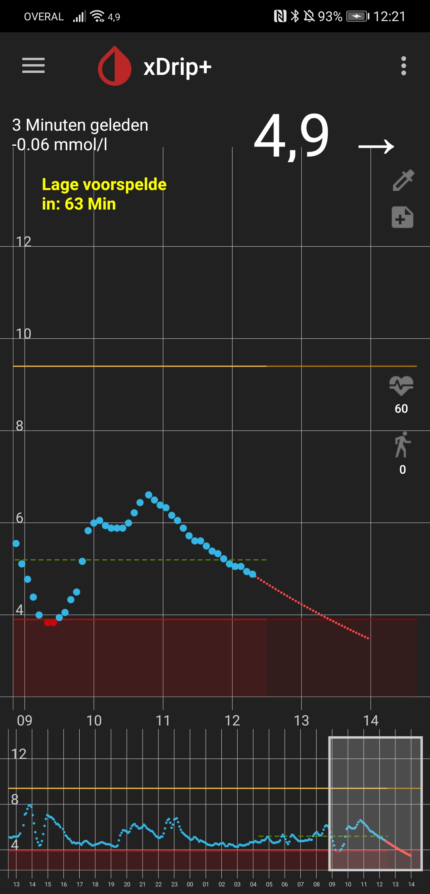
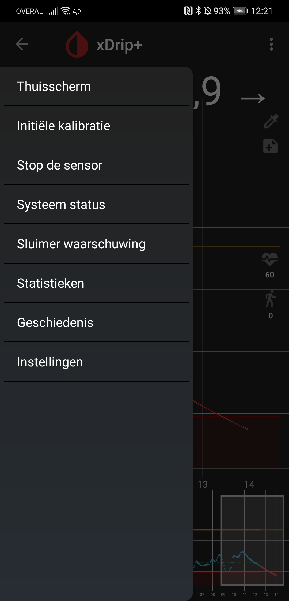
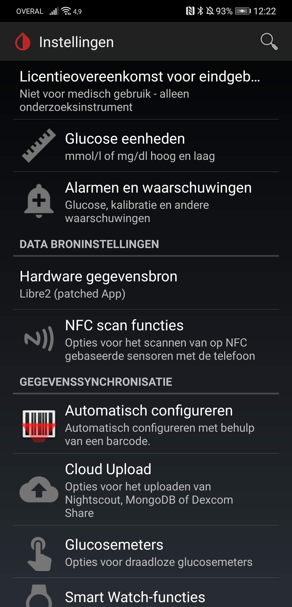
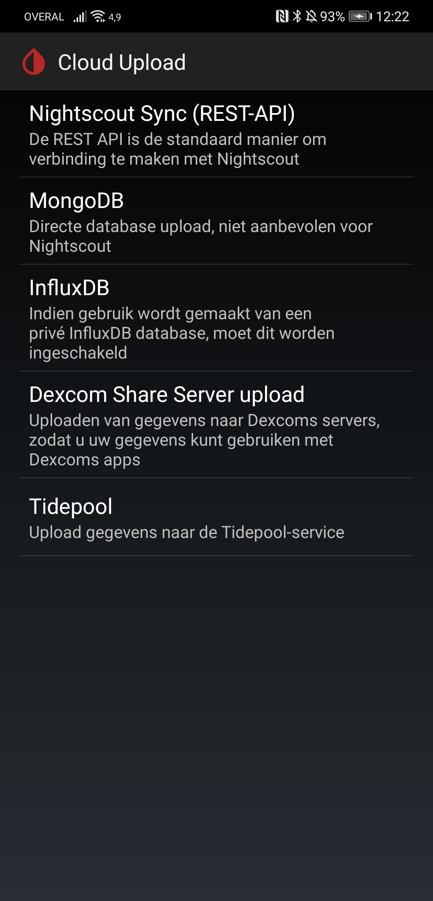
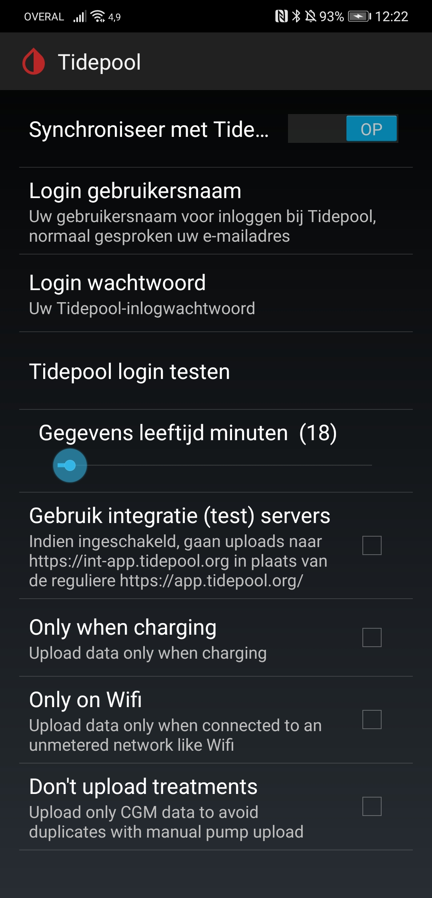

Configure Xdrip to export data to Tidepool
Step 1: Open Xdrip

Step 2: Open menu (left upper corner) and click "settings" (bottom of menu)

Step 3: Open "Cloud Upload"

Step 4: Open "Tidepool"

Step 5: Configure Tidepool
Enable TidePool synchronisation, fill in your username / password and test connection. If correct your data will be synced automatically ( this might take some time, check Xdrip's own event log for more info ).
